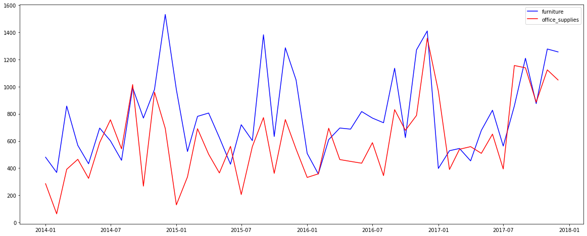

Welcome to my Data Science Portfolio
Here I mix statistics, machine learning and creativity to connect
the perfect data science potion. With each project, I uncover new insights
and turn raw data into actionable intelligence. So come on in, and let's explore
the power of data together!

The project is trying to overcome the issue of one challenge that large organisations face today is the problem of understanding and predicting which employees are going to leave the business, called employee turnover prediction or workforce attrition prediction.
The issue of duplicate questions stems from the enormous number of visitors on the Quora website, making it hard to avoid having similar worded questions from different users. To tackle this problem I have applied feature engineering as well as neural-network based BERT model and TF-IDF + XGBoost model on three different levels such as word level, character level, N-gram level.
Applied data cleaning methods and to overcome the issue of underfitting, implemented log transformation on target
variable whichresulted in reduced skewness and converted categorical variable into numerical by one hot encoding method.
Performed Linear, Ridge, Lasso and Gradient Boosting and bagging models obtained 0.42 RMSE and 0.87 F1 score.

Time series analysis using ARIMA, SARIMAX and Prophet model for forecasting furniture sales and office sales
Implemented statistical models such as ARIMA and SARIMAX and tuned the parameters using AIC to forecast super store
sales. Applied Prophet model to detect steep increase during the end of the year indicating seasonality and computed
confidence interval by setting alpha at 0.7.

Performed data wrangling to handle missing records of "gross" by calculating threshold votes and compared them to
budget to set value higher and lower than 25% and plotted heatmap to find correlation. Generated EDA, identified
outliers and patterns, compared the results of K nearest Neighbors Classifier and Naive Bayes with 89.4% accuracy.